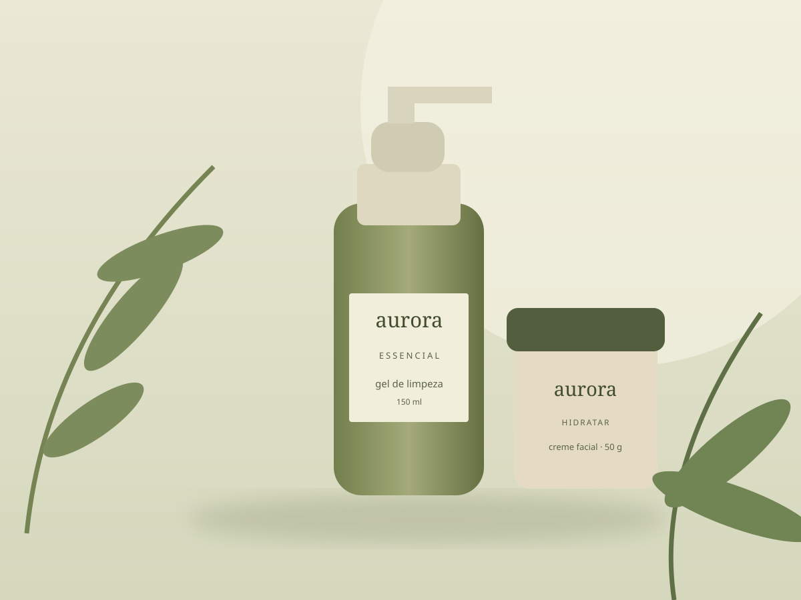

01 · Limpar
auroraESSENCIAL
gel de limpeza150 ml
gel de limpeza150 ml
Começo leve
R$ 59Gel de limpeza · O primeiro gesto da rotina.
Não existe uma rotina igual à sua. Vamos descobrir um ritual que caiba no seu dia?

Uma linha fictícia de produtos para demonstrar uma experiência de marca e descoberta. Valores apenas ilustrativos.
Gel de limpeza · O primeiro gesto da rotina.
Sérum facial · Uma textura para descobrir.
Creme facial · Finalize o seu momento.
Nem toda rotina precisa de muitos passos. Nossa proposta de marca valoriza escolhas claras, texturas agradáveis e um momento de presença.
Informações fáceis de encontrar e de entender.
Uma experiência de cuidado, sem alegações milagrosas.
Do frasco à navegação, espaço para respirar.
Escolha quando prefere desacelerar e explore uma sugestão de experiência.
Quiz de demonstração. Não é orientação dermatológica.
Sem teste de pele. Sem diagnóstico. Só suas preferências de tempo, momento e textura.
Montar meu ritual ↑Não. Aurora é uma marca fictícia criada para este portfólio. Não há estoque, cobrança ou envio de produtos.
As embalagens e descrições são estudos conceituais. Não representam fórmulas reais, certificações ou resultados clínicos.
Não. Ele demonstra uma interação de personalização por preferência de horário, sem analisar condições da pele ou indicar tratamento.